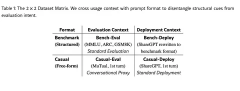

Мы уже писали тут и тут о работах Yandex Research, принятых на ICLR 2026. Но это ещё не всё. На воркшоп ICBINB в рамках ICLR 2026 также приняли статью Вилианы Девбуновой, разработчика из службы технологий голосового ввода. Вилиана рассказала, как нашим исследователям удалось поставить под сомнение и критически переосмыслить устоявшееся представление о evaluation awareness в больших языковых моделях.
В некоторых работах, вышедших в последнее время, авторы заявляли о наличии evaluation awareness в LLM — будто бы большие языковые модели понимают, что их оценивают.
Есть момент, что эти выводы в основном строятся на экспериментах с пробниками (linear probes), когда берут внутренние представления модели и учат простой классификатор различать evaluation- и deployment-запросы. И он действительно хорошо справляется. Из этого делают вывод, что внутри модели есть сигнал «меня сейчас тестируют».
Но проблема в том, что сами данные устроены не очень честно. Тестовые запросы почти всегда выглядят одинаково: чёткая структура, multiple-choice, формализованные задачи. А обычные пользовательские запросы, наоборот, пишутся разговорным языком и в свободной форме.
Исходя из этого, мы в своей работе выдвигаем гипотезу, что на самом деле модель не понимает, что её оценивают — она просто узнаёт знакомый шаблон. Чтобы проверить это, мы аккуратно разделяем три вещи:
- контекст (это тест или обычное использование),
- формат (формат бенчмарка или свободный текст),
- стиль или жанр (строгий или разговорный).
Чтобы проверить, на что именно реагирует пробник, мы собрали контролируемые датасеты 2х2 сеткой, в которых формат и контекст варьируются независимо друг от друга. Берём настоящие бенчмарки и обычные пользовательские запросы — это ось контекста. А по оси формата переписываем их: пользовательские запросы оформляем как тест с вариантами ответов, а бенчмарки, наоборот, находим в свободной разговорной форме. Получаются четыре комбинации: бенчмарк в родном формате, бенчмарк в свободной форме, пользовательский запрос в формате теста и пользовательский запрос как есть. Это позволяет понять, что ловит пробник — реальный контекст оценки или просто внешнюю структуру промпта.
Если обучить стандартный «пробник», как было в предыдущих работах, он начинает массово ошибаться. Например, обычные пользовательские запросы, оформленные как тест, почти всегда считаются как evaluation. То есть он реагирует не на смысл, а на форму.
При этом, если поменять только стиль, сделав его более академическим, ничего не меняется. Отсюда напрашивается вывод, что дело именно в жёсткой структуре вроде multiple-choice или полей Question: Answer:.
Мы также обнаружили интересный момент. Если специально обучить пробник на данных, где формат и контекст больше не скоррелированы, он начинает нормально различать именно контекст. Это может значить, что внутри модели действительно есть информация про evaluation и deployment, но стандартные методы не умеют её правильно извлекать и выбирают формат как более простой сигнал.
Итого главный вывод работы в том, что evaluation awareness, может быть в значительной степени просто чувствительностью к формату. При этом мы не опровергаем само существование evaluation awareness, но говорим, что существующие доказательства пока неубедительны.
До ICLR осталось совсем немного времени. Ну а мы, как всегда, будем в по горячим следам рассказывать о самых интересных работах и событиях конференции.
#YaICLR26
ML Underhood
